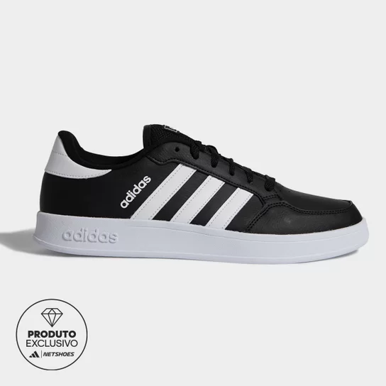
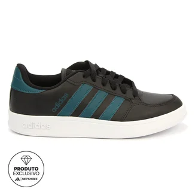
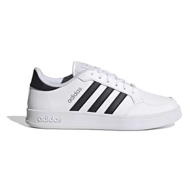
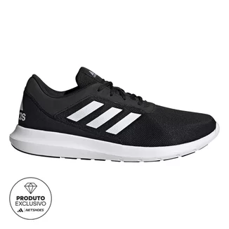

Produtos

Tênis masculino Adidas
Tênis adidas preto, disponível nos tamanhos: 37, 38, 39, 40 e 42

Tênis masculino Adidas
Tênis adidas preto, disponível nos tamanhos: 37, 38, 39, 40 e 42

Tênis feminino Adidas
Tênis adidas branco, disponível nos tamanhos: 34, 35, 36, 37 e 39

Tênis masculino Adidas
Tênis adidas preto, disponível nos tamanhos: 37, 38, 39, 40 e 42